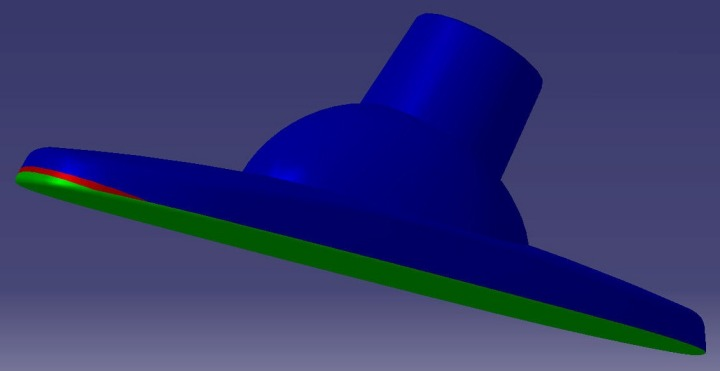
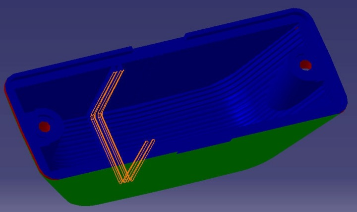
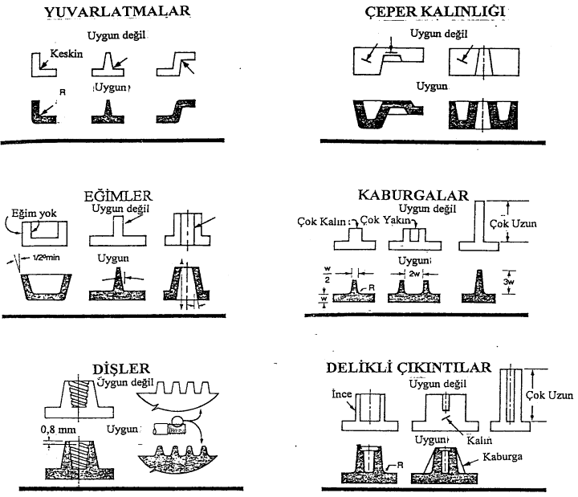

|
Özet
Bu çalýþmada plastik parçalarýn tasarýmýnda dikkat edilmesi gereken kurallarý ortaya koymaktadýr. Malzemesi ve yöntemi seçilen plastik mamulün çekme paylarý da hesaba katýlarak verilmesi gerekli toleranslardan bahsedilmiþtir. Delikler, yuvarlatmalar, cidar kalýnlýðý, ayrým hattý, kaburgalar vb. gibi ürün tasarýmýný etkileyen hususlarda nelere dikkat edilmesi gerektiði örnek þekillerle verilmeye çalýþýlmýþtýr.
1. Giriþ
Plastiklerle tasarýmdaki ilk giriþimlerde, metallere uygulanan test usulleriyle elde edilmiþ malzeme özellikleri ve metaller için geçerli olan tasarým kurallarý kullanýlýyordu. Plastiklerle metaller arasýnda çok büyük farklar bulunduðundan, bu durum mamullerin düþük kalitede olmasýna yol açýyordu.
Plastikler, üretim kolaylýðý, hafiflik ve ekonomikliðinin yanýnda estetik ve kendinden renklendirilebilme özellikleri en büyük avantajlarýdýr. Dolayýsý ile plastik mamullerin günümüz yüksek rekabet ortamýnda kendinden istenen iþlevi en iyi þekilde yerine getirebilmesi için uygun yöntemin seçilmesi ve optimum bir tasarýmýn gerçekleþmesi gereklidir [1].
Günümüzde plastikler, sanayide oldukça önemli bir konuma gelmiþlerdir. Artýk plastikler gýdalarýn paketlenmesinde, ulaþýma kadar hemen hemen her sahada baþarýyla kullanýlmaktadýr [1].
Parçalarýn geometrik tasarýmýnda da dikkatli olunmalýdýr. Delikler, kaburgalar, diþler gibi kýsýmlarýn boyutlandýrýlmasýnda ilgili kurallara uyulmalýdýr ki, kalýplama iþleminden sonra çarpýlma, boþluklar gibi sorunlar yaþanmasýn [2].
Tasarým sýrasýnda plastiklerin kimyasal ve fiziksel özellikleri ile ilgili temel bilgilerin bilinmesi de faydalý olacaktýr. Böylece parçanýn, istenen fonksiyonu baþarýyla yerine getirebilmesini saðlayacak en uygun malzeme seçilebilecektir.
2. Tasarým ilkeleri
Mamul bilgisinin baþarýlý olabilmesi için aþaðýdaki bilgilere sahip olunmalýdýr.
1) Mamulün fonksiyonlarý hakkýndaki bilgiler
2) Plastik malzemelerin davranýþlarý hakkýndaki bilgiler
3) Konuyla alakalý bütün ekonomik ve psikolojik faktörler hakkýndaki bilgiler
4) Plastik iþleme yöntemleri hakkýndaki bilgiler
5) Ýþleme teknolojisi hakkýndaki bilgiler
Tasarýmcýnýn imalat yöntemi bakýmýndan daha fazla bilgi sahibi olmasý, daha iyi bir tasarým demektir [1].
Baþarýlý bir plastik ürün tasarýmýnda aþaðýdaki dört temel unsurun unutulmamasý gereklidir [4]:
1) Ürünün Tasarýmý
2) Ürüne en uygun plastik malzeme seçimi
3) Üretim için gerekli alet ve takýmlarýn (makine, kalýp) tasarýmý, bir araya getirilmesi ve
4) Malzemelerin kalýplanmasý yani üretimidir.
Unutulmamalýdýr ki; Her þey tasarýmlar baþlar. Plastik parça tasarýmýnda yapýlacak hatalar, en son üretime kadar bütün süreci etkileyeceðinin bilincinde olmamýz gerekir.
2.1 Malzeme seçimi ve önemi
Ýstenen özelliklerin belirlemesi malzeme seçiminde en önemli kriterdir. Bunlar çekme, çentik, darbe ve katlanma dayanýmlarý, maksimum ve minimum sýcaklýk dayanýmlarý, dýþ ortamýn etkisi, aleve ve kimyasal etkilere direnç, aþýnma ve çizilme direnci, elektriksel direnç gibi özelliklerdir [1]. Bu özellikler dikkate alýnarak gerekli malzeme seçilip ona göre tasarým yapýlmalýdýr.
Bununla beraber, makina üreticilerinin ve kalýpçýlarýn tasarýmcýlara yardýmcý olmalarý, plastik sanayisinin hýzla geliþmesini ve baþarýlý olmasýný saðlamýþtýr.
2.2 Parça fonksiyonunun tanýmlanmasý
Ýmal edilecek parçanýn, doðal olarak bazý faydalarý olmalýdýr. Parça estetik veya fonksiyonel, genel olarak her ikisini de içeren, ihtiyaçlarý karþýlamalýdýr. Tasarýmda ilerleyebilmek için parçanýn fonksiyonu ve parçaya etkiyen çevre þartlarý çok iyi bilinmelidir. Fonksiyonun tam olarak bilinmesi tasarýmý kolaylaþtýrýr.
Aþaðýdaki listenin kullanýlmasý, çeþitli tasarým faktörlerinin tanýmlanmasýnda yardýmcý olabilir [2]:
Genel Bilgiler:
* Parçanýn fonksiyonu nedir?
* Birleþtirme iþlemi yapýlacak mý?
* Parça nasýl imal edilecek?
* Alan ve hacim sýnýrlamasý var mý?
* Kullaným ömrü ne kadardýr?
* Hafiflik isteniyor mu?
* Benzer uygulamalar bulunuyor mu?
Yapýsal Özellikler:
* Hizmet süresince, parçanýn yükleme karakteristiði nedir?
* Yüklerin genliði nedir?
* Hizmette ne kadar kalacak?
* Hizmet süresince izin verilen þekil deðiþimi miktarý ne kadardýr?
* Prototipi yapýldý mý veya yapýlacak mý?
Ortam özellikleri:
* Sýcaklýk
* Kimyasal çözücüler
* Nem
* Ortamdaki hizmet ömrü
Görünüm:
* Þekil
* Sitil
* Renk
* Yüzey iþlemleri
Ekonomik Faktörler:
* Mevcut parçanýn fiyatý
* Plastik parçanýn tahmin edilen fiyatý
* Parçanýn plastikten imali, basitleþtirme, dolayýsýyla masraflardan tasarruf saðlayacak mý?
* Son iþlemleri ortadan kaldýrmak için ve birleþtirmeleri hýzlý yapmak mümkün mü?
Örnek olarak, Þekil 2.1 'deki ürünler verilmiþtir. Ýki ürün birbirinden çok farklý olup kendi kulaným alanlarýna göre tasarýmý yapýlýp iþveleri ona göre belirlenmelidir [5,6].


Þekil 2.1. Tasarým ilkeleri dikkate alýnarak tasarlanmýþ iki farklý ürün
2.3 Toleranslar
Ürün tasarýmý sýrasýnda parçanýn boyutlarý için verilecek toleransýn tespiti bir hayli zordur ve göz önünde bulundurulmasý gereken pek çok faktör vardýr. Temelde ikiye ayýrabiliriz [1]:
1) Kalýp yöntemle ilgili:
2) Ürünün kullaným yeri ile ilgili:
Toleranslar verilirken mutlaka gerçekçi ve geniþ tutulmalýdýr. Plastik üreticileri bile malzeme çekmeleri için sýký aralýklar vermemektedirler. Örneðin polipropilen için ayný parçada çekme aralýðý % 1- 2.5 arasý gerçekleþebilmektedir. Çeþitli termoplastiklere ait en sýký ve tercih edilmesi gereken boyutsal toleranslar Tablo 1'de gösterilmektedir [1].
"Parçanýn büyüklüðü artýnca toleranslarýn sýnýrýnýn geniþletilmesi gerekir."
Tablo 1. Çeþitli termoplastiklere ait en sýký ve tercih edilmesi gereken (±) boyutsal toleranslar
Parça boyu |
25mm |
100mm |
300mm |
Malzeme |
Sýký (±) mm |
Tercih edilecek |
Sýký (±) mm |
Tercih edilecek |
Sýký (±) mm |
Tercih edilecek |
ABS |
0,05 |
0,10 |
0,10 |
0,15 |
0,40 |
0,75 |
Asetal |
0,07 |
0,15 |
0,12 |
0,25 |
0,80 |
1,75 |
Polietilen |
0,10 |
0,20 |
0,20 |
0,40 |
0,80 |
1,75 |
Polipropilen |
0,10 |
0,18 |
0,18 |
0,30 |
0,80 |
1,75 |
Naylon 6/6 |
0,09 |
0,15 |
0,15 |
0,30 |
1,0 |
1,90 |
Tablo 2. Çeþitli termoplastiklere ait çekme payý ve yoðunluk bilgileri verilmiþtir [5].
Malzeme |
Çekme Payý |
Yoðunluk (g/mm³) |
PC |
0,0006 |
0,0012 |
PPT 20 (katkýlý) |
0,0011 |
0,11123 |
PA6 |
0,005 |
0,00113 |
PP |
0,014 |
0,00091 |
ABS |
0,005 |
0,00102 |
PMMA |
0,006 |
0,00115 |
3. Kalýplanacak ve imal edilecek parçalarda dikkat edilmesi gereken hususlar
Tasarýmcý kalýplama iþleminde kullanýlan plastik malzemelerin özellikleri hakkýnda dikkatli olmalýdýr.
Bu bölümde kaburgalar, çýkýntýlar, yuvarlatmalar gibi tasarým kriterleri verilmeye çalýþýlacaktýr. Þekil 3.1'de bunlarýn özeti görülmektedir [2].

Þekil 3.1 Parça tasarýmýnda uyulmasý gereken temel kurallar.
|